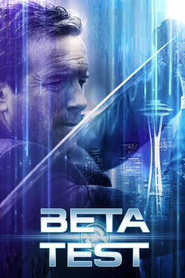

#7533 Beta Test The Game is Real
 
 IMDB-Wertung: 6.4 / 10
IMDB-Wertung: 6.4 / 10  Metascore: 0
Metascore: 0 
Der Profi-Gamer Max Troy wird von der Spielefirma Sentinel beauftragt, deren neuesten Ego-Shooter noch vor der Veröffentlichung zu testen. Schnell merkt er, dass etwas sonderbar ist: Sobald er ein Level abgeschlossen hat, passieren die gleichen Dinge auch in der Realität. Er findet heraus, dass der Protagonist des Spiels im wirklichen Leben der ehemalige Sentinel-Mitarbeiter Orson Creed ist. Doch wer hat ein Interesse daran, Orsons Tätigkeiten gezielt fernzusteuern und zu kontrollieren? Die beiden tun sich zusammen, um herauszufinden, wer hinter dieser Verschwörung steckt.
Jahr: 2016
Dauer: 88 Minuten
FSK: 16
Land: USA Studio: Mirror Images LTD.Tonspuren: DD5.1 - ,
Untertitel:
Auflösung: 1080p (1920x816) Größe: 4157 MB
Genre: Action, Thriller, Sci-Fi
Regisseur: Nicholas Gyeney
Drehbuch: Nicholas Gyeney
Soundtrack:
Darsteller:
 Manu Bennett als Creed
Manu Bennett als Creed Larenz Tate als Max
Larenz Tate als Max- Linden Ashby als Kincaid
- Kevon Stover als Zane
- Brandy Kopp als Tech Support
- Sara Coates als Abbie
 Yuji Okumoto als The Surgeon
Yuji Okumoto als The Surgeon- Bill Sorice als Interviewer
- Stefan Hajek als Slackjaw
- Adrien Gamache als Caleb Angelo
- Mark Riccardi als The 2nd Professional
- Angela DiMarco als Lillian Brandt
- David S. Hogan als Bank Professional 1
- Lukas Seely als Bank Professional 2
- L. Gabriel Gonda als Bank Professional 4
- Nicholas Gyeney als Delivery Man
- Brad Hackworth als Gaven
- McKay Stewart als Richter
- Jeff McKracken als Sentinel Fighter
- Richard Cranor als Sentinel Fighter
- John Steel MacDonald als Axel
- Daniel Locicero als Sentinel Fighter
- Ben Leiataua als Sentinel Fighter
- Lex Damis als Sentinel Fighter
- Lou Simon als Sentinel Fighter
- Sophia Gutierrez Perez als Security Camera Girl 5
- Edward Michael Scott als The Professional
- Edi Zanidache als The Runt
- Angela Okumoto als Reporter
- Anthony Phillips als School Shooter
- Casey Pritchett als Bank Professional 3
- Anthony Brogan als School Securty 1
- MacKenzie Mendoza als School Security 2
- Alan Pepper als Sentinel Fighter
- Kevin Park als Sentinel Fighter
- Sean Ferguson als Sentinel Fighter
- Dennis Tudos als Sentinel Fighter
- Rob Bradstreet als Sentinel Fighter
- Andrew Dickert als Sentinel Fighter
- Henry Feldmann als Sentinel Fighter
- Gurkaran Singh als Sentinel Fighter
- Leeanne Burk als Security Camera Girl 1
- Elisabeth Eden Voneber als Security Camera Girl 2
- Caitlin Anna Scully als Security Camera Girl 3
- Liz Truong als Security Camera Girl 4
Datei: X:\2016(A-F)\Beta Test The Game is Real (2016, FSK16, 1920x816).mkv seit 16.11.2017
Festplatte: HD 2016(A-Z)
 Es gibt insgesamt 147 Filme in der Gruppe '2016(A-F)'
Es gibt insgesamt 147 Filme in der Gruppe '2016(A-F)'